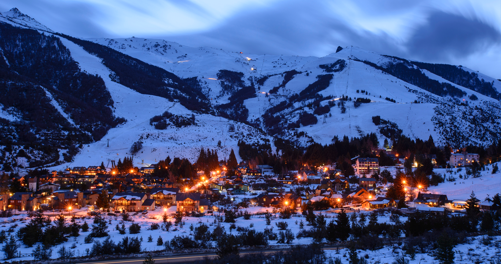
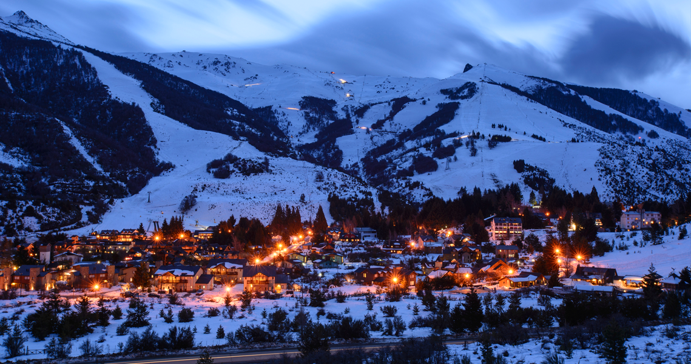
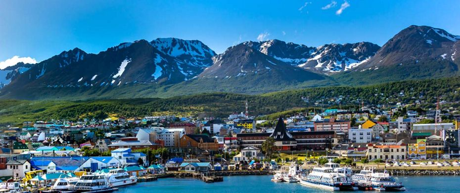
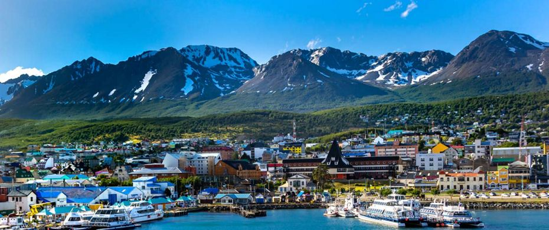
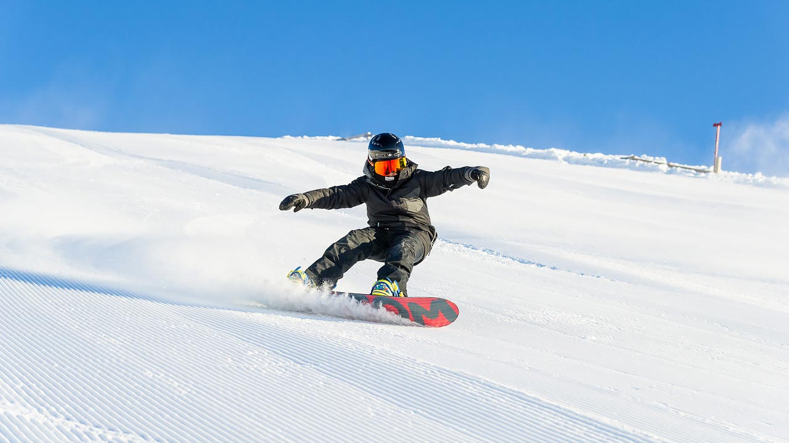
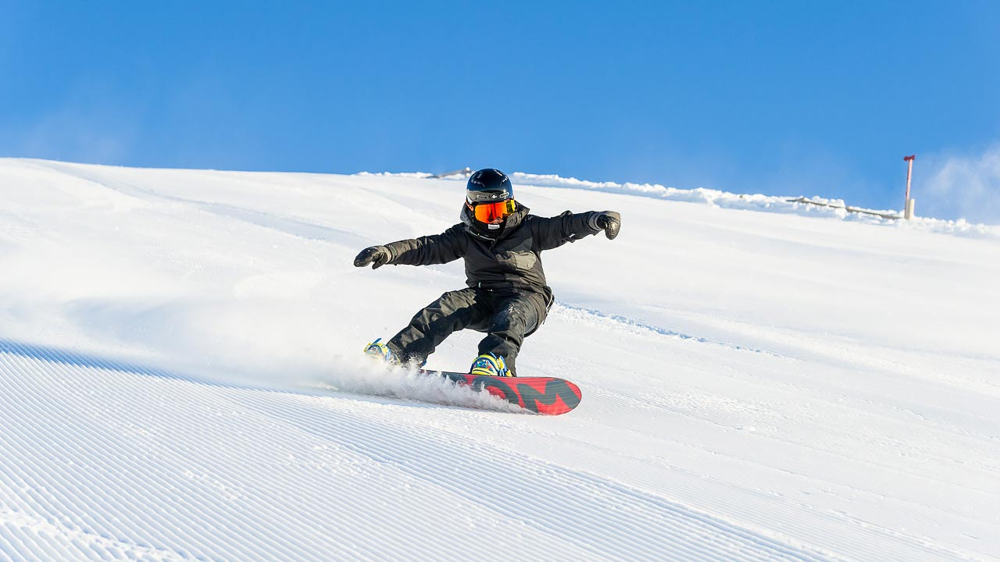

Disfrutá de Bariloche las cuatro estaciones del año. Con paisajes maravillosos, En Bariloche tenés variedad de actividades para disfrutar: excursiones tradicionales, paseos lacustres, nieve para todos los gustos, la mejor gastronomía, turismo joven, salidas románticas, actividades familiares, aventura, tranquilidad y una agenda cultural diversa

 

Conocé una de las ciudades mas australes del mundo. Rodeada por la Cordillera de los Andes y por el Mar, Usuahia es una ciudad que atrae a turistas de todas partes del mundo
 

Mendoza es famosa por sus Bodegas y sus picos nevados. Una Ciudad para disfrutar todo el año